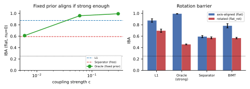

When can a representation make weights
modular?
Coupling strength, axis orientation, and the rotation barrier —
mapping the boundary of recoverable task-aligned modularity

flat_rot, \(x=zQ^\top\)) collapses every method’s
alignment toward chance — the same Oracle that reaches \(0.99\) axis-aligned reads \(0.45\) rotated. \(\ge5\) seeds, mean\(\pm\)std.Fixity works — if the coupling is strong and the orientation is right
The Oracle (nr.blk-bin-abs) is penalty-only like
Separator, but its codes are fixed to the task’s true factor
blocks — the in-codebase analogue of seRNN’s immovable grid or
Jacobs–Jordan’s pre-placed positions. Unlike the free codes it cannot
collapse, and Fig. 1(left) shows it pays off: as the coupling
\(c\) grows \(6\!\times\!10^{-3}\to
6\!\times\!10^{-2}\to3\!\times\!10^{-1}\), input-block alignment
climbs \(0.63\to0.97\to0.99\) and \(Q_{\mathrm{block}}\) \(0.38\to0.70\to0.73\), with cross-block
weight mass driven to \(0.3\%\) — a
clean factorization, at a small accuracy cost (MSE \(0.016\to0.022\)). The lesson is two-fold:
(i) fixity, not a task gradient, is what lets
a penalty-only prior align weights (it removes the collapse that sinks
the learned codes); (ii) the production hyperparameter
search, tuned on validation MSE, picked the weakest coupling,
where alignment has barely started — modularity was never on the
objective. But this success is bought with prior knowledge of the
factors: the Oracle is told the decomposition. The open
question for a learned method is whether anything can supply
that orientation without being told — and the next two sections bound
what is possible.
The rotation barrier
We rotate the signal factors into a generic basis
(flat_rot: stored inputs \(x=zQ^\top\) for a random orthogonal \(Q\), so no factor occupies a coordinate
subset) and re-measure, de-rotating \(W_0\) back to latent-factor coordinates so
the metric still targets the true factors. Fig. 1(right):
every method’s alignment collapses toward chance. The
Oracle that reached \(0.99\)
axis-aligned now reads \(0.45\) — its
fixed contiguous block prior assumes the factors live on
coordinate blocks, and once they do not, the “informative” prior is
simply wrong. \(\ell_1\) falls \(0.88\to0.70\) (it sparsifies in the rotated
input basis, not the latent one), Separator stays at its already-low
\(0.57\). This is the
localizability prediction of the theory report (P3) made
concrete: a per-neuron representation can express only axis-aligned
module structure, so it aligns weights only when the task’s factors are
themselves axis-aligned. Rotate the task and the entire family — learned
or fixed — loses its grip, because there is no longer any per-neuron
partition to find. (The functional modules still exist in rotated
subspaces; they are simply invisible to a per-neuron prior, exactly as a
learned rotation like DAS, not a neuron score, is needed to read
them.)
The discrete swap is not a substitute
BIMT breaks the permutation symmetry with a discrete neuron
swap toward fixed grid slots — in the literature (Growing
Brains) this is what converts a functional clustering into anatomical
modularity on cognitive tasks. On our additive bench it does nothing:
BIMT-with-swap and BIMT-without-swap are statistically identical on
input-block alignment (flat: \(0.782\)
vs \(0.786\), Cohen’s \(d=-0.10\), \(p=1.0\), \(n{=}10\); modarith: \(0.463\) vs \(0.464\), \(d\approx0\)). The reason is the same
ceiling: the swap can only relocate a neuron that has a clean
functional identity to a matching slot, and on a nonlinear additive task
the hidden units carry mixed, rotated roles, so there is no partition
for the swap to exploit. Where the literature’s swap succeeds (discrete
modular addition, \(20\)/\(84\) cognitive tasks), the optimal solution
is neuron-localized; where ours lives (nonlinear regression),
it is not. The swap is a symmetry-breaker, not a
symmetry-creator.
Forward-coupling, and the localizability ceiling
Putting the geometry in the gradient path (NeuroPos: \(w_{ij}=1/\|p_i-p_j\|\)) keeps it engaged —
its positions never collapse, since the weights are the
positions — but on this continuous regression task the \(1/\mathrm{dist}\) parameterization cannot
fit (\(\mathrm{MSE}\approx0.7\) vs
\(0.015\)), so its alignment is not
meaningful here. Tellingly, on the one task where a standard MLP also
struggles — discrete modarith, where every penalty-only
method sits at \(\mathrm{MSE}\,{\ge}\,1.3\) — NeuroPos fits
best (\(0.74\)):
forward-coupled positions are load-bearing exactly where a
distance-structured solution is natural. The published forward-coupled
methods (Erb et al.; Mészáros et al., who report monotonically rising
modularity \(Q\)) demonstrate the
alignment on tasks their architectures fit; our contribution is to
locate why it is needed — the gradient path is the only channel
by which the task can orient a representation it would otherwise
collapse.
The map.
Pulling Reports 2–3 together, task-aligned weight modularity from a per-neuron representation is recoverable only inside a narrow region: the factors must be (near-)linearly computed and axis-aligned (Whittington’s regime, where a neuron partition is the energy optimum), and the representation must be prevented from collapsing — by fixing it to the right orientation, by a forward benefit of distance, or by an anchored non-degeneracy term (companion Report B). Our learned free penalty-only codes satisfy none of these, and the nonlinear synthetic leaves sit above the localizability ceiling, so no amount of coupling, swapping, or anti-collapse recovers a neuron-aligned decomposition — the modules are real but rotated, and a per-neuron prior is the wrong instrument to read them.
Reproducibility. Same harness/sweep as Report 2
(notebooks/neurep_review/); Oracle coupling sweep
{oracle,oracle_mid, oracle_strong}, rotation cell
flat_rot, swap toggle bimt_{swap,noswap}
(S_swap\(\in\{200,0\}\)).
Localizability ceiling after Whittington, Dorrell, Ganguli & Behrens
(ICLR 2023).